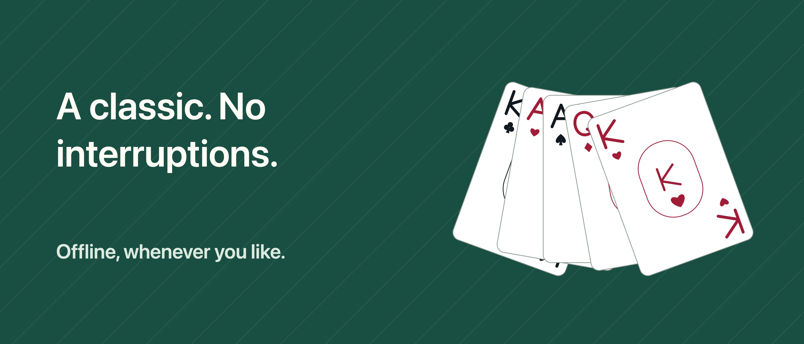

Solitaire Unbound

A moment for you, one card at a time.
A little time with the cards, without interruptions. Play draw-1 or draw-3 Klondike with no ads, IFG account or subscription.
UNDO AND TRY AGAIN Undo, redo and legal-move hints are free. Drag cards or tap a card and its destination. Choose Relax to hide the clock, or Classic to see time and moves.
A GAME TO COME BACK TO Saves and statistics stay on your device. Choose a random deal or a starting layout with a verified solution, and return for the daily challenge. Random deals are not always winnable; your choices can also leave a verified deal blocked.
MORE VARIANTS WITH PRO One purchase adds FreeCell, 1-, 2- and 4-suit Spider, the challenge archive and more customisation: six tables, six card backs and three card-face styles in total. No hints to buy or use up.
The game works offline. Buying or restoring Pro may require internet and an Apple Account. Progress does not sync between devices and may be removed when you uninstall the app. Restoring Pro does not recover deleted progress.